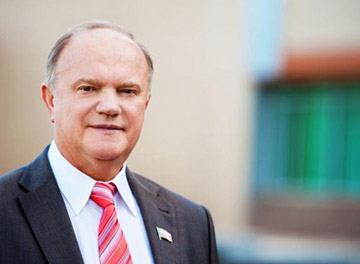
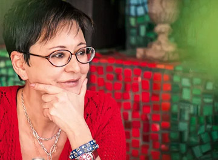

Российский ученый, инженер, изобретатель, один из основателей электронного образования в России
Владимир ЖириновскийСветский политический деятель

Геннадий ЗюгановСветский политический деятель

Ирина ХакамадаСветский политический деятель
Владимир ЖириновскийСветский политический деятель
Отзывы о деятельности
01
БИОГРАФИЯ
Михаил Петрович Карпенко, президент Современной гуманитарной академии (СГА), профессор, доктор технических наук, родился в Москве в 1936 году. Получил два высших образования, окончив Московский институт инженеров геодезии и картографии (1960 г) и Московский институт нефтехимической и газовой промышленности (1966 г).
ДЕТСТВО.
Михаил Петрович Карпенко родился 15 октября 1936 г. в Москве. Отец — Карпенко Петр Иванович. Мать — Толчинская Фанико Семеновна.
Отец — ответственный работник Наркомата, в 1930-годы Начальник Московско-Курской железной дороги. В 1937 году был арестован и расстрелян по ложному обвинению. В 1956 году реабилитирован посмертно.
Мать — партийный работник, работник Обкома ЦКП Воронежа, зав секретарем народного образования и культуры, в 1930-годы помощник Председателя Моссовета по культурной части.
В 1937 году была осуждена как Член семьи изменника Родины на 8 лет ИТЛ. Отбывала срок в Акмолинском лагере, а затем в Кзалтау Карагандинской области. В 1955 году реабилитирована.
ОБРАЗОВАНИЕ (МИИГАиК)
В 1954 году поступил на геодезический факультет Московского института инженеров геодезии, аэрофотосъемки и картографии (МИИГАиК) на обучение по специальности «инженерная геодезия». В период обучения в институте каждое лето принимал участие в изыскательских экспедициях от МОСГИДЕПа, ПИ №2 и др. организаций, в картографических съемках в районе Горьковского моря, Красноярского аллюминиевого завода, в Тюменской области и др. Многие из его однокурсников — Алексей Пименов, Лидия Рыхлова, Феликс Василевский, Игорь Ларин, Александр Зингер — после окончания института успешно работали в различных областях деятельности. Важный след в жизни, несомненно, оставили преподаватели и профессора вуза: профессор математики Концевич, Венцель, Вировец, Мазмишвили, ректор вуза Муравьев (преподававший начертательную геометрию) и др.
РАБОТА В ГИПРОТРУБОПРОВОДЕ. ИЗЫСКАНИЯ.
После окончания вуза в 1960 году по распределению поступил на работу Гипротрубопровод, в отдел технических измерений. Участвовал в изысканиях трасс магистральных трубопроводов и площадок перекачечных станций: Куйбышев – Мозырь, Унеча – Полоцк, Ярославль – Кириши, Усть – Балык – Омск, Хашури – Батуми, «Московское газовое кольцо», ЛЭП Брянск – Унеча, участков трубопроводов – «Александровское - Анжеро - Судженск». Его перу принадлежит исполняемый до сих пор отделом изысканий Института гипротрубопроводов «Гимн отдела изысканий» – «Домой, скорей домой».
РАБОТА В ВНИИСТЕ, ДОСТИЖЕНИЯ В СФЕРЕ ПРОЕКТИРОВАНИЯ И СТРОИТЕЛЬСТВА НЕФТЕПРОВОДОВ.
В 1966 году заочно окончил Московский институт нефтехимической и газовой промышленности по специальности «инженер-механик» и был переведен на работу в научно-исследовательский институт по строительству магистральных трубопроводов (ВНИИСТ). М.П. Карпенко зарекомендовал себя как авторитетный специалист в области строительства и эксплуатации магистральных нефтепроводов, баз и хранилищ.
В 1972 году защитил диссертацию по выбору оптимальных трасс магистральных трубопроводов, получив степень кандидата технических наук. В 1975 году за участие в научном обеспечении строительства сверхмощных газопроводов был награжден орденом «Знак Почета».
В 1982 г. Защитил докторскую диссертацию по строительству магистральных трубопроводов. За разработку и внедрение методов поточно-скоростного строительства трансконтинентального газопровода Уренгой – Помары – Ужгород был награжден Государственной премией СССР в области науки и техники (1984 г.).
РАБОТА В СФЕРЕ ОБРАЗОВАНИЯ.
С 1988 г. основная работа М.П. Карпенко переносится в сферу образования. Возглавляя кафедру Центрального межведомственного института повышения квалификации руководящих работников и специалистов строительства МИСИ (Москва), занимался развитием новых способов обучения, получил звание профессора. В 1992 основал новый вуз — Современная гуманитарная академия, основанный на широком использовании информационных и телекоммуникационных технологий, где непрерывно совершенствуются и широко внедряются инновации в области образовательных технологий, дидактических основ обучения и материально-технического оснащения распределенного вуза. В области образовательных технологий и дидактических основ обучения им получено около 200 авторских свидетельств и патентов.
Под руководством М.П. Карпенко СГА первой в России начала использовать в обучении спутниковые технологии, первой создала поточное производство учебных продуктов и материалов, разработала информационно-интеллектуальные методы академического администрирования. Под его руководством к 2002 г. СГА вошла в число крупнейших университетов мира, а в России, СНГ и Европе она стала самым большим вузом.
СОВРЕМЕННАЯ ГУМАНИТАРНАЯ АКАДЕМИЯ.
Деятельность М.П. Карпенко получила широкое общественное и государственное признание. Он награжден орденами и медалями Советского Союза и Российской Федерации, высокими знаками отличия общественных организаций. За разработку научно-методических и организационно-технических основ Федеральной университетской сети дистанционного обучения ректор СГА был удостоен премии Правительства РФ в области образования за 2000 г, а в 2005 г. стал победителем Всероссийского конкурса «Лидер в образовании». А в 2006 г. Указом президента РФ за большой вклад в развитие отечественной науки и многолетнюю плодотворную деятельность был награжден орденом Дружбы.
Многие российские и зарубежные академии приняли профессора М.П. Карпенко в действительные члены. В Российской академии естественных наук и Международной академии информатизации он руководит отделениями дистанционных и образовательных технологий, является вице-президентом Международного союза общественных академий наук, членом Межгосударственного комитета СНГ по распространению образования и образованию взрослых, членом Президиума Международной ассоциации «Знание», членом Высшего Совета Национального Комитета «Интеллектуальные ресурсы России» и других организаций, разрабатывающих вопросы образования. Его благотворительная деятельность связана с работой фондов «Культура и образование в экстремальных условиях», «Правозащитник России».
02
НАУЧНАЯ ДЕЯТЕЛЬНОСТЬ
Михаил Петрович очень уважаем коллективом нашей фирмы, коллеги считают его настоящим товарищем, он очень отзывчив и доброжелателен, руководство ценить его как хорошего сотрудника. Михаил Петрович прекрасно находит язык с партнерами и клиентами нашей организации. Все замечают его вежливость и обходительность.
31.08.2017
Михаил Петрович очень уважаем коллективом нашей фирмы, коллеги считают его настоящим товарищем, он очень отзывчив и доброжелателен, руководство ценить его как хорошего сотрудника. Михаил Петрович прекрасно находит язык с партнерами и клиентами нашей организации. Все замечают его вежливость и обходительность.
31.08.2017
Михаил Петрович очень уважаем коллективом нашей фирмы, коллеги считают его настоящим товарищем, он очень отзывчив и доброжелателен, руководство ценить его как хорошего сотрудника. Михаил Петрович прекрасно находит язык с партнерами и клиентами нашей организации. Все замечают его вежливость и обходительность.
31.08.2017
Михаил Петрович очень уважаем коллективом нашей фирмы, коллеги считают его настоящим товарищем, он очень отзывчив и доброжелателен, руководство ценить его как хорошего сотрудника. Михаил Петрович прекрасно находит язык с партнерами и клиентами нашей организации. Все замечают его вежливость и обходительность.
31.08.2017
Михаил Петрович очень уважаем коллективом нашей фирмы, коллеги считают его настоящим товарищем, он очень отзывчив и доброжелателен, руководство ценить его как хорошего сотрудника. Михаил Петрович прекрасно находит язык с партнерами и клиентами нашей организации. Все замечают его вежливость и обходительность.
31.08.2017
Михаил Петрович очень уважаем коллективом нашей фирмы, коллеги считают его настоящим товарищем, он очень отзывчив и доброжелателен, руководство ценить его как хорошего сотрудника. Михаил Петрович прекрасно находит язык с партнерами и клиентами нашей организации. Все замечают его вежливость и обходительность.
Прогресс науки и технологий цивилизации развитых стран бросает новый вызов глобальному социуму - вытесняются из производства и услуг новые контингенты работников. Чтобы справиться с депрессией, вызванной сокращением рабочих мест в производстве, необходимо принять энергичные меры по социализации больших контингентов, а это возможно только через образование.
В ближайшее время образованию для выживания любого этноса будет принадлежать главенствующая роль и одной из важнейших наук станет научная дидактика, опирающаяся на когнитивные науки и информатизацию. Электронная информационно – образовательная среда является главным инструментом предоставления образовательных услуг с использованием современных информационных и телекоммуникационных технологий. При выборе критерия качества ЭИОС не могут быть использованы профессиональные и творческие достижения выпускников, так как они в большей степени зависят от способностей личности, чем от метода обучения.
В виде критерия качества электронной информационно – образовательной среды нельзя использовать характеристики информационного и телекоммуникационного оборудования, так как оно беспрерывно совершенствуется, к тому же нельзя по отдельным частям судить о качестве целого.
Главным преимуществом электронной информационно – образовательной среды над традиционно применяемыми образовательными средами является увеличение количества функций, выполняемых технологически продвинутой средой, поэтому и критерий ее качества должен быть функциональным.
Методы и среда электронного обучения позволяют совершить прорыв в изучении социально-психологических характеристик студентов и других обучающихся по данным, полученным в результате применения в учебном процессе массового ассессмента в виде оценки самими обучающимися учебных работ коллег.
Контактно-групповой метод решает задачи массового образования, но требует от общества больших жертв – содержания целой армии педагогов, строительства громадного количества специальных зданий – школ, кампусов вузов, общежитий и др., перемещения больших масс людей внутри поселений и межгородского, значительного обострения проблемы чрезмерной урбанизации, вымывания молодежи из провинции, из малых городов и поселений, имеет также много других недостатков.
Однако, благодаря быстрому прогрессу информационных и телекоммуникационных технологий, носящему взрывной, революционный характер, уже сложились условия для отмены ненужных ограничений и перехода образования на другую парадигму, назовем ее индивидуальной непрерывной.
Главное, что образование получает от информационно–коммуникационных технологий, – это возможность получать и перерабатывать гигантские объемы информации, применяя для этого и вообще для всего образовательного процесса интеллектуальные роботы и устройства искусственного интеллекта.
История развития цивилизации показывает, что приход новых технологий практически полностью отрицает не только старые технологии, но также подходы, парадигмы, организационные формации и накопленный опыт. Все начинается с нуля. Каменный век закончился не потому, что закончились камни, а потому, что у человечества появились металлы. Что взяло огнестрельное оружие от луков и стрел? Что взял автомобильный транспорт от гужевого? Электрические приводы от мускульных? Компьютеры от счетов? Принтеры от глиняных таблиц? Ответ - ничего, и накопленный опыт использования устаревших технологий, как правило, в новых условиях непригоден.
Трудно начинать с нуля, не обращать внимания на былые заслуги, довериться не проверенной жизнью практике, не положительному опыту, а новым экспериментальным исследованиям, идти вперед сквозь строй консерваторов и ретроградов. Но на острие прогресса в ближайшее время будут только те образовательные системы, которые совершат революционные преобразования в дидактике и технологии, полностью освоив новые реалии информационных процессов.
Миссия элитных вузов – генерация элиты, однако с появлением сетевых технологий и всеобщего открытого доступа в информационное пространство, функция генерации элиты уходит из университета. Возникают виртуальные институты, объединяющие личности без условия их совместного проживания для общения. О науке говорить не будем, в России наука делается в профессиональных исследовательских институтах. Что же остается элитным вузам? Образование. Но в этой области они опускаются на уровень обычных массовых вузов и уподобляются престарелым боксерам, с негодованием взирающим на молодых, полных энергии соперников.
Развившийся в России и в отрасли образования примат юридических подходов над соображениями здравого смысла, справедливости, категорическим императивом (по Канту) привел к торжеству юристократии, к созданию системы законодательных предписаний и ограничений, подобно болезни-сколиозу сковывающей живой и гибкий костяк инициатив и инноваций, всегда существующей в социуме благодаря разумной и предприимчивой природе человека - гомосапиенса.
Образование является одной из самых консервативных отраслей человеческой культуры. Достижения цивилизации в виде новых революционных технологий, меняющих привычный быт человека, крайне медленно осваиваются сферой образования. Например, кино и телевидение десятилетиями пытались, но так и не сумели существенно потеснить книги и преподавателей в практической дидактике. Однако в настоящее время мы находимся на пороге не реформы и не модернизации, а самой радикальной революции не только методов и форм, но и подходов, нового понимания миссии образования в человеческом социуме.
Сейчас же установлено значительное влияние образования на физиологию и материальное благополучие человека, на экономику и устойчивость развития социума, этноса и государства. Выяснилось, что образованные люди имеют лучшее здоровье и дольше живут.
До сих пор широко применяющаяся консервативная дидактика, разработанная в XVII веке и опирающаяся на классно-урочный и лекционно-семинарский методы, в принципе не может быть использована для разворачивания массового высшего и непрерывного образования, так как она требует затрат чрезмерно больших материальных и трудовых ресурсов, создает непреодолимые организационные трудности благодаря кампусному методу обучения и неэффективна в когнитивном плане, так как использует не индивидуальные, а коллективные, групповые формы обучения.
К сожалению, процесс революционных преобразований в образовании затрудняется практическим отсутствием образовательной науки. Образование до сих пор выступает в роли служанки других наук, а собственная наука развита слабо. Накапливаются многочисленные факты и наблюдения о влиянии образования на различные явления социальной жизни, о значении архитектуры образовательных структур, архитектуры учебных занятий, о влиянии когнитивного потенциала на успешность учебного процесса и т.д., но практически отсутствует системное обобщение этих фактов. Существует название образовательной науки – эдукология, однако ее вклад в жизненно-важные решения и действия в сфере образования незначителен.
Любому выпускнику придется работать в коллегиальной среде, но получить такие навыки в вузе практически невозможно, так как между студентом и его коллегами стоит преподаватель. В то же время информационные и веб-технологии предоставляют возможности индивидуального подхода и неограниченного общения студентов. Задачей дидактов является разработка таких форм общения студентов, которые приносили бы пользу учебному процессу и готовили бы студентов к той роли, которую им придется играть после окончания обучения.